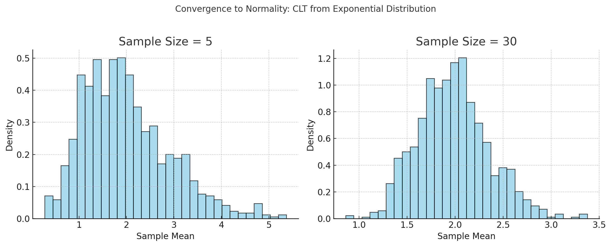

Problem 1
📊 Exploring the Central Limit Theorem (CLT) Through Simulations
🌟 Motivation
The Central Limit Theorem (CLT) is one of the most profound results in probability and statistics. It states:
As the sample size increases, the distribution of the sample mean of independent, identically distributed (i.i.d.) random variables approaches a normal distribution, regardless of the population's original distribution (provided the population has finite variance).
This theorem is foundational because it justifies the widespread use of normal approximations in real-world problems, such as:
- Confidence interval construction
- Hypothesis testing
- Quality control
- Polling and surveys
- Financial risk assessment
Despite its theoretical depth, the CLT is best understood through visualization and simulation, which is what this project offers.

🧪 Simulation Objectives
You will simulate how sample means behave for various distributions and visualize how, as the sample size increases, the distribution of the sample mean:
- Becomes more symmetric
- Narrows in spread (reduced variance)
- Approaches the bell-shaped curve of the normal distribution
🧰 Steps of the Simulation
🔹 1. Choose Population Distributions
Select a few contrasting distributions:
| Distribution | Description | Example Use Case |
|---|---|---|
| Uniform (0, 1) | Constant probability over an interval | Randomized algorithms, simulations |
| Exponential (λ = 1) | Skewed, long-tailed | Time between Poisson events (e.g. radioactive decay) |
| Binomial (n, p) | Discrete, bounded | Success/failure counts |
| Poisson (λ) | Discrete, skewed | Rare event counts |
| Normal (μ, σ²) | Symmetric, bell curve | Height, weight, test scores |
🔹 2. Generate Samples and Compute Means
For each distribution:
- Fix a population (e.g., generate 10,000 random values).
- Choose sample sizes: \(n = 5, 10, 30, 50\).
-
For each sample size:
-
Take many random samples (e.g., 10,000 samples of size \(n\)).
- Compute the mean of each sample.
- Store these sample means.
🔹 3. Visualize the Results
For each sample size and distribution:
- Plot a histogram of the sample means.
- Overlay a normal distribution curve (same mean and variance) for comparison.
-
Observe:
-
Convergence to normality
- Reduction in spread as \(n\) increases
- The original distribution's influence diminishes with larger \(n\)
🔍 Parameter Exploration
📌 Effect of Sample Size \(n\)
As \(n\) increases:
- The sample mean becomes less variable
- The distribution becomes more normal
- The standard deviation of the sample mean becomes:
$$ \sigma_{\bar{x}} = \frac{\sigma}{\sqrt{n}} $$
📌 Effect of Population Shape and Variance
- Distributions with greater skew or longer tails require larger \(n\) to approximate normality.
- The original variance affects how wide the distribution of the sample mean is.
🧠 Practical Applications
| Field | CLT Role |
|---|---|
| Polls & Surveys | Justifies margin of error in political polls. |
| Quality Control | Used in Six Sigma and control charts. |
| Finance | Predicting mean returns, risk estimation. |
| Medicine | Estimating average treatment effect. |
| Manufacturing | Sampling batches for consistency testing. |
The CLT helps practitioners generalize from small samples to the larger population, with confidence.
📝 Example Results Interpretation
Let’s say we used an exponential distribution (highly skewed):
- Sample size 5: Histogram of sample means is still skewed.
- Sample size 30: The distribution of means is visibly bell-shaped.
- Sample size 50: Distribution looks very close to a normal curve.
➡️ This demonstrates CLT in action: despite the skewed population, the sample mean becomes normally distributed.
🧾 Deliverables Summary
| Item | Description |
|---|---|
| ✅ Jupyter Notebook / Markdown | Implements the simulation, provides plots and commentary |
| ✅ Histograms | For each population and sample size, with normal overlays |
| ✅ Parameter analysis | Vary sample size, distribution, variance |
| ✅ Discussion | Why CLT holds, when it fails (e.g., infinite variance cases), and real-world meaning |
🧠 Additional Tips & Extensions
- Try a Cauchy distribution (infinite variance) and show that CLT doesn’t apply.
- Use Q-Q plots or Shapiro-Wilk tests to measure normality.
- Animate how the distribution of means changes over \(n\).
🔚 Summary
This simulation brings to life one of statistics’ most powerful theorems:
- It shows how normality emerges from randomness.
- It reveals the invisible structure behind data sampling.
- And it underpins inference, allowing us to trust conclusions drawn from limited observations.
By running this project, students gain intuition and confidence about the CLT—far more than by memorizing formulas alone.